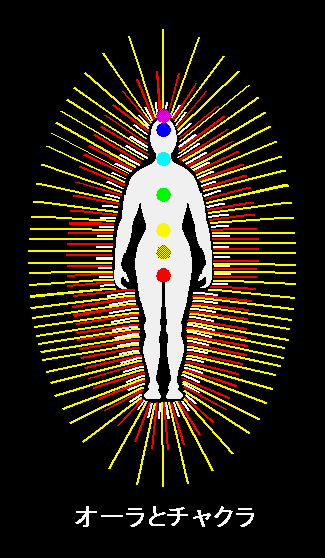

オーラとチャクラ

オーラについて、もう少し詳しく説明いたします。
オーラは上図のように三重構造に重なり合っています。（厳密に分ければ、もっと多くなるのですが、説明の分かり易さのため、三つにまとめます。）
内側から順に
肉体の次元のオーラ・・・図の白い放射。肉体の生命力を表しています。
心の次元のオーラ・・・図の赤い放射。感情や思考などの心のあり方、および心の徳性を表しています。
魂の次元のオーラ・・・図の黄色い放射。持って生まれた魂の使命や才能を表しています。
となります。
これは人間の存在が、肉体の次元、心の次元、魂の次元、の三重構造をしているのに対応しています。それぞれの存在次元からオーラを発しているため、オーラが三重構造になるのです。
そして、それぞれの存在次元にチャクラと呼ばれるエネルギー中枢があります。
図の色のついた丸が主要な７つのチャクラの場所を表しています。
チャクラの“開花”によって、様々な潜在能力が発揮される事が知られています。
チャクラの開花には、それぞれのチャクラに対応した色彩の刺激が有効で、その色彩は虹色の順（ただしバイオレットの方が上）に並んでいます。
また、チャクラは肉体の次元⇔心の次元⇔魂の次元とエネルギーをやり取りするパイプ役にもなっています。つまり、チャクラのパイプが開いていないと、各存在次元間の意志が通じなくなってしまうわけす。
チャクラの開花は、開運に必要な数々の能力を獲得する事でもあります。
主要７チャクラの特徴は、次の表の通りです。
チャクラ名 |
関連肉体器官 |
対応色彩 |
主要な霊的働き |
ムラダーラ |
副腎 |
レッド |
肉体の機能維持。気力や活力の増進。 |
スワディスタナ |
脾臓、性腺 |
オレンジ |
若さと健全な性的魅力の中枢。創造力の源。 |
マニプラ |
膵臓 |
イエロー |
決断力や意志力の中枢。情熱の源。 |
アナハタ |
胸腺 |
グリーン |
愛情の中枢。豊かな情動の源。 |
ヴィシュダ |
甲状腺 |
ブルー |
コミュニケーション能力と自己表現力の中枢。 |
アジナ |
脳下垂体 |
インディゴ |
第三の眼。直感力や智慧の源。 |
サハスララ |
松果体 |
バイオレット |
高次元からの啓示を受ける。 |
Source: http://www2.inforyoma.or.jp/~chance/